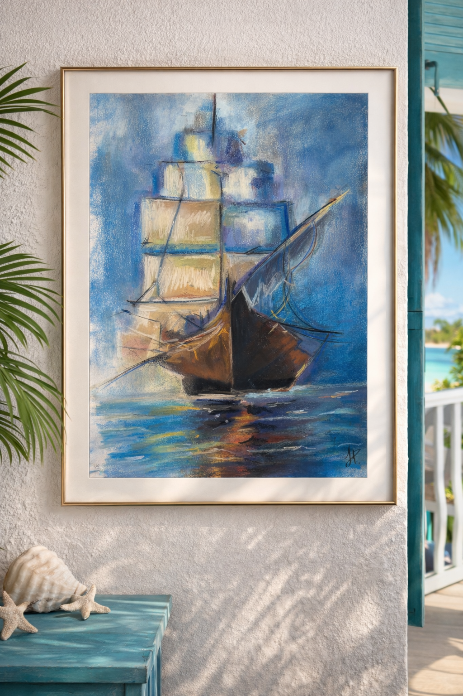

Ficha
Obra
Tecnica · Medidas · Estado
Para disponibilidad y precio, solicita informacion por contacto directo.
Solicitar informacion
Ficha
Tecnica · Medidas · Estado
Para disponibilidad y precio, solicita informacion por contacto directo.
Solicitar informacion